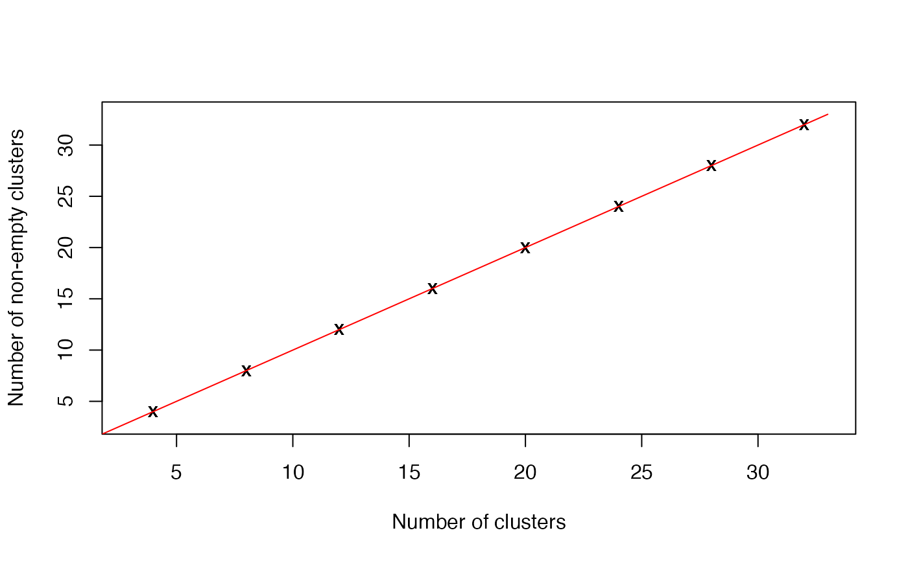

Cluster a omics_array object: determine optimal fuzzification parameter and number of clusters.
Source:R/omics_array.R
unsupervised_clustering_auto_m_c-omics_array-method.RdBased on soft clustering performed by the Mfuzz package.
Usage
# S4 method for class 'omics_array'
unsupervised_clustering_auto_m_c(
M1,
clust = NULL,
mestim = NULL,
M2 = NULL,
data_log = TRUE,
screen = NULL,
crange = NULL,
repeats = NULL,
cselect = TRUE,
dminimum = FALSE
)Arguments
- M1
Object of omics_array class.
- clust
[NULL] Number of clusters.
- mestim
[NULL] Fuzzification parameter.
- M2
[NULL] Object of omics_array class,
- data_log
[TRUE] Should data be logged?
- screen
[NULL] Specify `screen` parameter.
- crange
[NULL] Specify `crange` parameter.
- repeats
[NULL] Specify `repeats` parameter.
- cselect
[TRUE] Estimate `cselect` parameter.
- dminimum
[FALSE] Estimate `dminimum` parameter.
Value
- m
Estimate of the optimal fuzzification parameter.
- c
Estimate of the optimal number of clusters.
- csearch
More result from the cselection function of the Mfuzz package
Examples
if(require(CascadeData)){
data(micro_S, package="CascadeData")
M<-as.omics_array(micro_S[1:100,],1:4,6)
mc<-unsupervised_clustering_auto_m_c(M)
}
